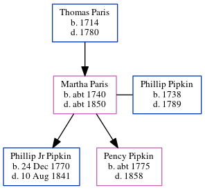

Martha Pipkin (née Paris) c1740 - c1850
[ Home ] | [ Calendar ] | [ Surnames Index ] | [ Census Index ] | [ Family History ]The child of Thomas Paris, Martha Paris, the 4 times great-grandmother of Michele Copp (née Phillips), was born in Chowan, Pitt, North Carolina, USA c. 17401,2 and had 2 children with Phillip Asher Pipkin: Phillip jr and Pency Patrick.
She died c. 1850 in , Wayne, North Carolina, USA2.
Parents
- Thomas was born in 1714
Children
- Phillip jr was born on Dec 24, 1770
- Pency Patrick was born c. 1775
Citations
- North Carolina, U.S., Deaths, 1906-1930 Ancestry.com Operations, Inc. (North Carolina, Deaths, 1906-1930. Salt Lake City, Utah: FamilySearch, 2013.)
- OneWorldTree Online publication - Provo, UT, USA: MyFamily.com, Inc.
Family Tree
Generated by ged2site. Last updated on Jun 6, 2024